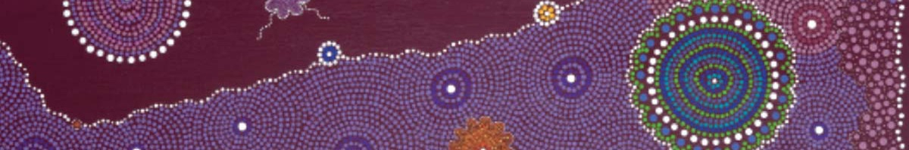

Original Blackboard item · _7400128_1

In this module we define and discuss the social and cultural determinants of health in the context of Indigenous Peoples. Over the past several decades there has been an increased focus on the social determinants of health – the factors beyond the biomedical paradigm that are influenced by social conditions, political agendas and social policies. For Indigenous Australian Peoples factors that extend far beyond socio-economic and other social measures, play a crucial role in health and wellbeing. The cultural determinants of health are now being recognised within mainstream health and social work organisations as crucial factors in positive health outcomes for Indigenous Peoples across the globe. Positive relationship with, and connections to family, community, culture, and Country are essential to good health.
We will explore these themes as you continue to build knowledge and understanding of the current health status of Indigenous Australian Peoples with the aim of preparing you as a professional to better advocate for and support Aboriginal and Torres Strait Islander Peoples. This week you will be asked to reflect on your understanding of what culture actually is and how your own culture may influence people from different cultures.
We will discuss a YouTube clip presented by an Indigenous Canadian expert on the social determinants of health. The concept of epigenetics is touched upon. The cultural determinants of health are identified and discussed based on Indigenous scholars and health workers research and expertise.
By the end of this module you will be able to: